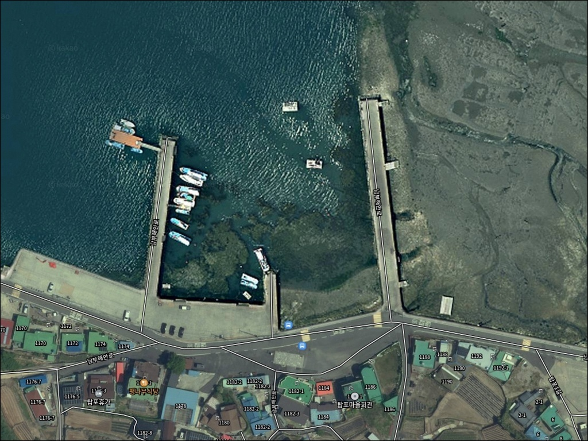
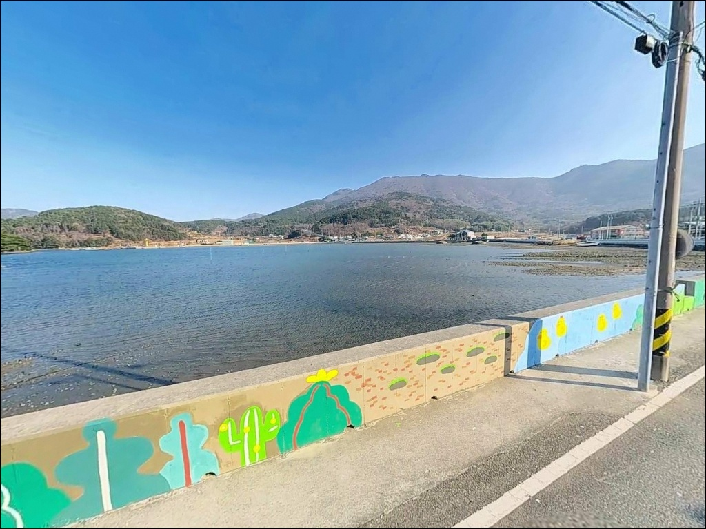
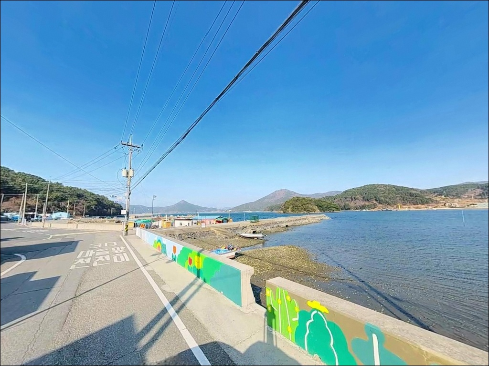
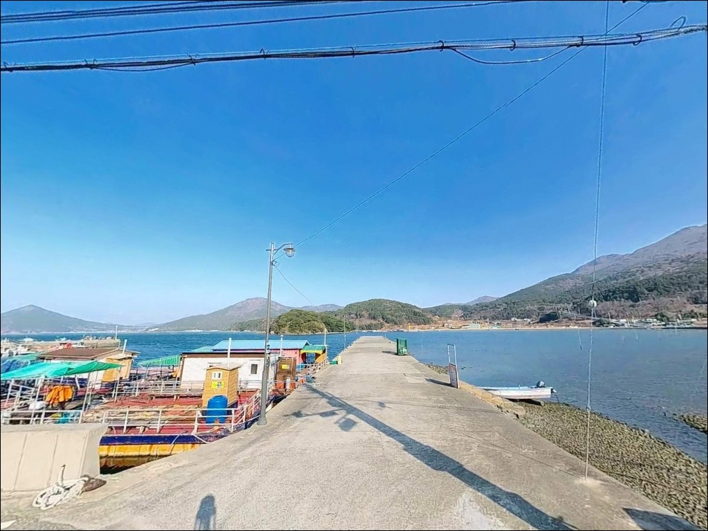
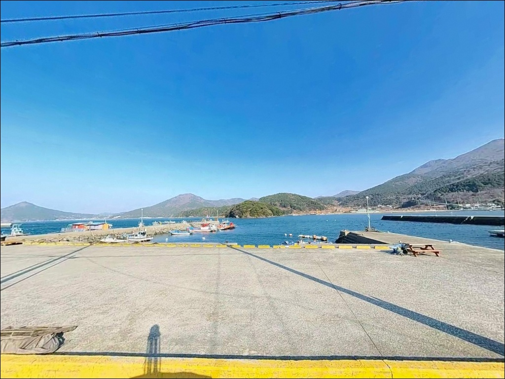
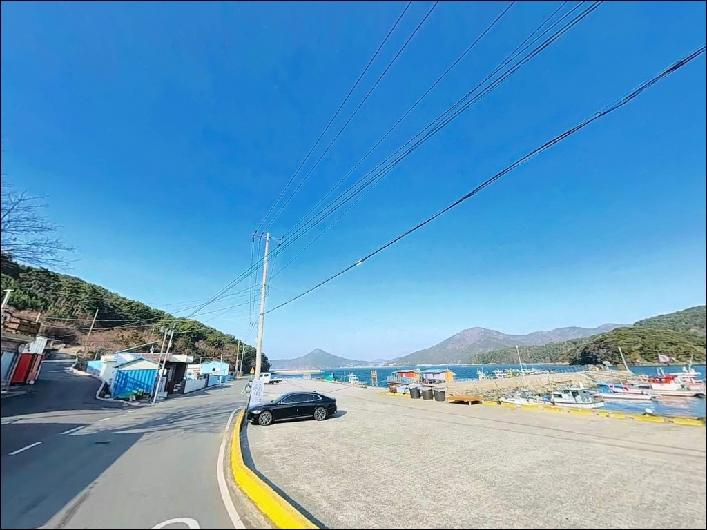
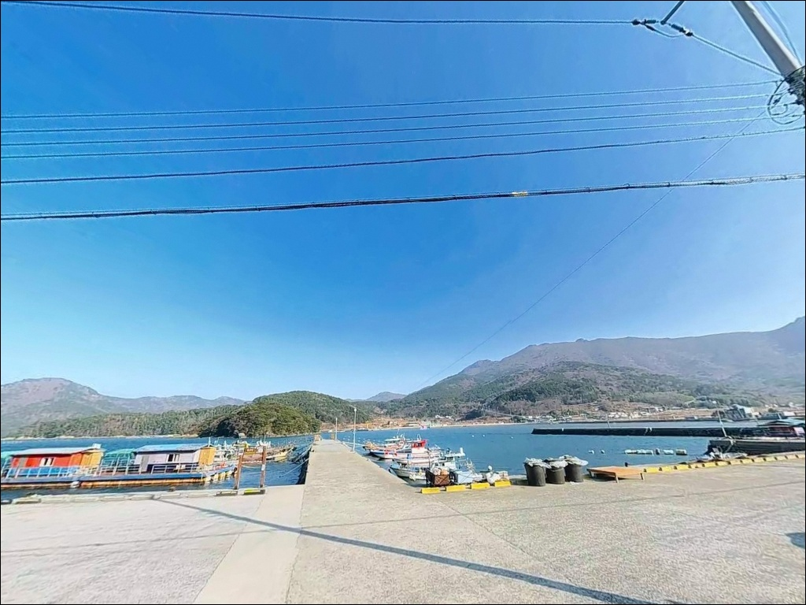
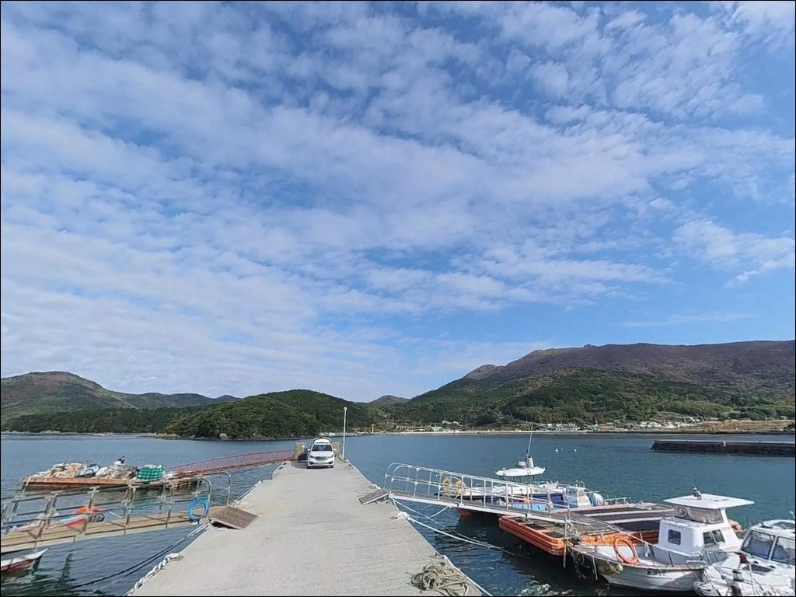
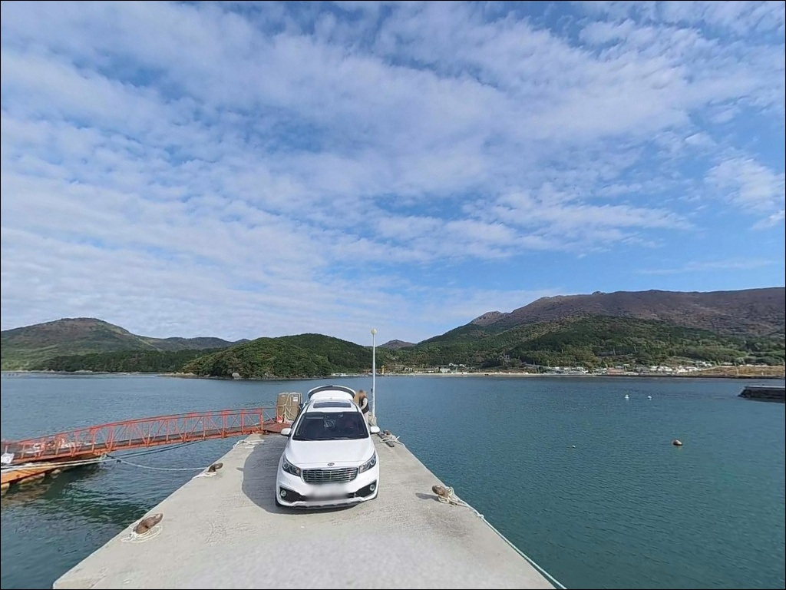

내항처럼 보이는 거제 탑포리방파제, 콧부리 수심 810m에서 갈린 찌낚시
이 페이지에는 광고(제휴 링크 포함)가 있으며, 광고 링크를 통해 구매하면 운영자가 판매 수익 또는 수수료를 받을 수 있습니다. 포인트 사진: 카카오맵 스카이뷰·로드뷰. 이 페이지의 지도·사진 이미지는 카카오맵의 실제 서비스 이미지와 다를 수 있습니다.


포인트 안내
탑포리방파제
경남 거제시 남부면 탑포리 391-14
내항형 구조로 보이는 방파제라고 해서
수심을 얕게 판단하면 찌 채비가 바닥을 훑게 됩니다.
탑포리방파제 콧부리는 수심 8~10m 구간이 형성되는
거제 남부권 특유의 깊은 지형입니다.
이 수심 조건을 출조 전에 파악해 두는 것이
자리 선택과 채비 세팅의 기준이 됩니다.
탑포리방파제는 거제도 남부면 북서측 해안,
탑포마을 앞 소형 만입부에 자리한 정주어항 방파제입니다.
방파제 외항 방향은 탑포만을 통해
남해 외해 영향권에 직접 연결되는 구조이며,
인접한 탑포해상콘도와 함께
연안 낚시 환경이 갖춰진 포인트입니다.
이 글은 탑포리방파제의 지형 조건,
낚시 방식 선택 기준, 진입 여건과 차박 가능성에 집중합니다.
조황 단정이나 특정 어종 보장은
이 글의 범위에 포함되지 않습니다.

1. 진입 동선과 포인트 접근성
탑포리방파제는 남부면 해안 도로에서
탑포마을 방향으로 진입하는 구조입니다.
마을까지 이어지는 도로는
일반 마을 도로 수준의 폭으로 형성되어 있으며,
승용차와 소형 SUV는 별 어려움 없이 진입이 가능합니다.
다만 대형 차량의 경우 방파제 입구 직전 구간에서
회차 여유가 좁아질 수 있어
출발 전 위성지도 확인을 먼저 하는 편이 안전합니다.
주차 공간은 방파제 초입 콘크리트 광장과
선착장 인접 평지 두 곳에 확보되어 있습니다.
동시에 5~10대 이상 주차가 가능한 수준이며,
낚시 자리에서 차량까지 거리가 가까워
장비 운반이 편한 구조입니다.
어선 접안 구역을 피해 자리를 잡는 것이 기본 매너입니다.

2. 차박 환경과 야간 체류 여건
탑포리방파제는 방파제 인접 주차 공간이 넉넉한 편이어서
낚시 후 차박 체류까지 이어지는 구성이 가능합니다.
항내 가로등이 설치되어 있어
야간 조도가 비교적 확보되는 편이며,
방파제 내항 쪽은 어느 정도 밝은 환경에서
야간 낚시를 진행할 수 있습니다.
다만 방파제 외측과 콧부리 끝단은
조명이 닿지 않는 구간이 있어
헤드랜턴은 필수로 챙겨야 합니다.
탑포마을은 소규모 어촌으로 민가 밀집도가 낮습니다.
방파제와 마을 사이에 농원과 해상콘도 시설이 혼재해 있어
야간 소음과 통행은 적당한 수준입니다.
차박 시 프라이버시는 비교적 양호한 편이나,
어선 새벽 출항 시간대에는
차량 위치가 어선 동선과 겹치지 않도록
주차 자리를 잡는 것이 중요합니다.


3. 주변 편의시설 및 인프라 현황
탑포마을 안에는 소형 매점이 있어
간단한 생필품을 현장에서 구입할 수 있습니다.
항구 입구 인근에 공중화장실이 위치해 있어
장시간 낚시나 차박 체류 시 기본 위생 여건은 확보됩니다.
편의점과 식당은 저구리 방면으로
차량 10분 거리에서 이용할 수 있습니다.
낚싯방과 대형 마트는
10km 이내 면 소재지 방향으로 이동해야 합니다.
식수, 얼음, 채비 소품은
출발 전에 갖춰 두는 것이 현실적입니다.
탑포리 인접 해상에는 탑포해상콘도가 운영 중이며,
선상 낚시좌대를 겸한 해상 숙소로
온수 샤워와 전기 사용이 가능합니다.
방파제 낚시 대신 좌대 낚시를 검토한다면
사전에 예약 여부를 확인하는 편이 좋습니다.

4. 방문 전 반드시 챙겨야 할 준비사항
탑포리방파제가 속한 거제 남부면 해역은
내만권이 아닌 외해 기준 풍랑예보가 적용되는 구역입니다.
내만 기상 기준으로 출발을 판단하면
현지 파도와 바람 세기를 과소평가하게 됩니다.
기상청과 해양경찰청 예보에서
남해 외해 기준 풍랑 예보를 확인하고
출발 여부를 결정하는 것이 기본입니다.
외항 테트라포드는 크기가 크고 표면이 미끄럽습니다.
테트라포드 위에서 이동하는 구간을 최소화하고,
구명조끼와 미끄럼 방지 낚시화를 반드시 착용합니다.
방파제 콧부리는 조류가 직접 닿는 구간이므로
기상이 불안정한 날에는 끝단 진입을 피하는 편이 안전합니다.
어선 조업은 새벽 출항이 기본입니다.
낚시 자리를 잡을 때 어선 동선과 어구 위치를 먼저 확인하고,
어민 작업에 방해가 되지 않는 자리를 선택합니다.
출조 전 탑포 일대 최신 조황을
검색창에서 먼저 확인해 두는 편이 좋습니다.

거제 남부 방파제 낚시에서 수심을 먼저 확인해야 하는 이유
탑포리방파제의 지형 구조는
방파제 외항이 탑포만 입구를 통해
남해 외해 해역과 연결되는 형태입니다.
외항을 바라보는 방파제 콧부리와 중간 외항 구간은
수심이 5~10m로 깊게 형성되어 있으며,
내항 쪽은 3~5m 수준으로 비교적 완만합니다.
수심 차이가 뚜렷한 구조이므로
내항과 외항 중 어디에 자리를 잡느냐에 따라
채비 세팅 방식이 달라집니다.
방파제 외항 측에는 테트라포드가 설치되어 있으며,
외항 쪽 바닥은 암반과 사니질이 혼합된 지형입니다.
테트라포드 경계 라인과 콧부리 끝단 주변에는
조류 흐름이 집중되는 구간이 형성되어
어류 먹이 활동 구간과 겹치는 편입니다.
내항 쪽 해초 군락은 볼락 서식 환경을 갖추고 있어
야간 라이트게임 탐색 구간으로 유효합니다.
방파제 콧부리에서 외항 방향으로 흐르는 조류가
들물 시 탑포만 입구를 통해 유입되는 구조이므로,
물때에 따라 조류 방향과 세기가 달라집니다.
정조 타이밍에 자리를 잡으면 채비 흘림이 안정되는 편입니다.
최신 조황은 출조 전에 꼭 검색해 보시기 바랍니다.


6. 포인트에 어울리는 낚시 스타일
탑포리방파제에서 가장 정형화된 낚시는
외항 콧부리와 테트라포드 경계를 노리는 릴찌낚시입니다.
콧부리 수심 8~10m에 맞춰
구멍찌 0~1호 채비로 바닥층 인근을 공략하면
감성돔과 벵에돔이 주 대상이 됩니다.
봄철 산란기 대물과 가을 마릿수 시즌이
이 포인트에서 뚜렷하게 구분되는 편입니다.
에깅은 방파제 외항과 콧부리 쪽에서
무늬오징어와 갑오징어를 노리는 방식으로 활용됩니다.
방파제 끝단에서 먼 곳 해초 지대를 공략하는 방식이
이 포인트 구조에 잘 맞으며,
이른 아침 조류가 움직이는 시간대가
에깅 반응이 살아나는 조건입니다.
거제 남부면 해역 전반에서 에깅 시즌이 길게 유지되는 편이라
연중 공략이 가능한 스타일입니다.
볼락 루어는 야간에 특히 유효합니다.
항내 가로등 아래에서 2~3호 지그헤드에
소형 웜 채비를 운용하면
볼락과 전갱이 라이트게임이 성립하는 구조입니다.
내항 해초 군락 경계선을 천천히 탐색하는 방식이 어울립니다.
원투낚시는 내항 쪽에서 도다리와 붕장어를 노리는 용도로
잔잔한 내항 수면 조건을 활용하는 방식이 맞습니다.

7. 대안 포인트와 플랜 B 동선
탑포리방파제 주차 공간이 차 있거나
조류 조건이 맞지 않는 날이라면
쌍근방파제가 첫 번째 대안입니다.
탑포리에서 3~4km 거리로 가깝고
외항형 구조로 수심이 넉넉하며,
에깅과 볼락 루어 여건이
탑포리방파제와 유사한 해역 패턴을 보입니다.
진입로도 정비된 수준이어서
플랜B 이동 부담이 적은 포인트입니다.
남부면 다포리 방향으로 이동하면
다대방파제가 있습니다.
탑포리에서 약 7~8km 거리이며,
외항 테트라포드와 내항 직벽 구조를 갖춘
거제 남부의 대표급 낚시 포인트입니다.
콧부리 수심 8m 내외로 탑포리방파제와 수심 조건이 비슷하며,
조류 방향과 물색이 좋을 때 찾는 포인트로
낚시인 사이에서 인지도가 높습니다.
저구항은 탑포리에서 차량 10분 이내로,
편의점과 식당가를 갖춘 상권이 있어
물자 보충 동선으로도 활용할 수 있습니다.
차박 숙영 규모가 더 큰 공간을 원할 때는
저구항 주차장이 대체 후보가 됩니다.

지형 조건을 파악한 뒤라면
탑포리방파제는 충분히 가볼 만한 곳입니다
릴찌낚시로 감성돔과 벵에돔을 노리거나
이른 아침 에깅으로 무늬오징어를 공략하고 싶은 낚시인이라면
탑포리방파제의 지형 조건은 잘 맞는 구조입니다.
콧부리 수심과 테트라포드 경계,
내항 해초 군락까지 갖춘 복합 자리 구성이 가능하고
야간 볼락 라이트게임까지 이어지는
연중 활용 포인트입니다.
다만 거제 남부면 외해 해역이라는 특성상
기상 판단을 내만 기준으로 하면 낭패를 보기 쉽습니다.
출발 전 외해 기준 풍랑 예보를 확인하고,
조류가 뚜렷하게 움직이는 물때를 맞추는 것이
이 포인트에서 낚시 여건을 제대로 활용하는 방법입니다.
물때 확인, 외해 기상 점검, 진입로 사전 확인,
이 세 가지를 갖추고 나서면
탑포리방파제는 기대에 부응하는 포인트가 됩니다.
항내 주차 공간이 넉넉하고
야간 가로등이 확보된 조건에서
낚시를 마친 뒤 방파제 옆에서 하룻밤 머물고 싶은
차박 낚시 여행자에게도
탑포리방파제는 무리 없는 선택지입니다.